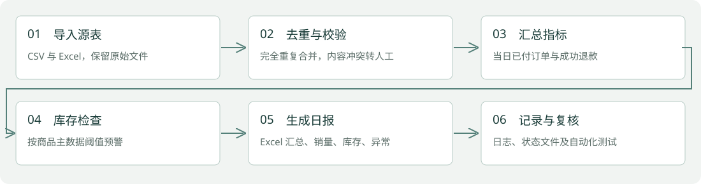

个人模拟业务项目 · 2026.10
电商运营日报自动化与库存预警
把分散的订单、商品、退款与库存数据，转成可核查的运营日报。
Python / pandas / openpyxl / pytest

业务问题与项目目标
模拟消费品运营团队每天合并 CSV 和 Excel，手工核查重复订单、退款金额及库存。目标是保留数据异常，让日报结果可追溯。
个人负责内容
本次个人模拟项目，使用 AI 辅助开发；完成数据口径、校验规则、报表生成与自动化测试。虚构数据不涉及 beU 实际业务。
系统架构与流程
CSV / Excel → pandas 读取 → 编号去重与格式校验 → 以分为单位汇总 → openpyxl 日报及异常清单。

实现细节
- 完全相同的订单只保留一条；相同订单号内容冲突时整组转人工，避免任意取首行。
- 按当日已付订单统计销售额与销量；只计入对应的成功退款，超额退款转异常。
- 金额使用 Decimal 校验后转整数分计算；缺列、主数据重复时明确失败并记录日志。
- 相同输入重复运行覆盖结果报表，不累计写入；失败状态写入 metrics.json，避免误用旧报告。
运行证据与核对结果
固定样例含 17 行订单，得到 6 个有效订单、销售额 1,500 元、退款 197 元、退款后销售额 1,303 元；3 个低库存商品、12 条异常。11/11 项预设指标对照一致。本机本次运行 0.102 秒，仅包含 Python 处理及报表写出。
两项新项目合计 17 项 pytest 测试通过，包含真实浏览器端到端测试。查看测试报告
当前边界与后续工作
这是固定模拟集的核对结果，不代表真实业务准确率或人工提效百分比。日报为结果值工作簿，源数据变化后需重新运行。退款口径限定为当日有效订单的对应退款，未实现跨日退款账龄分析。